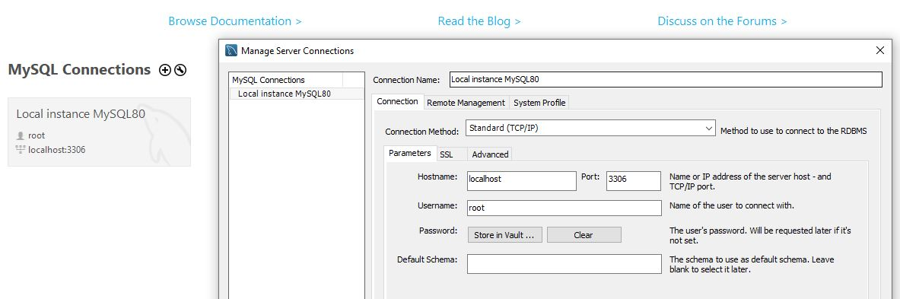
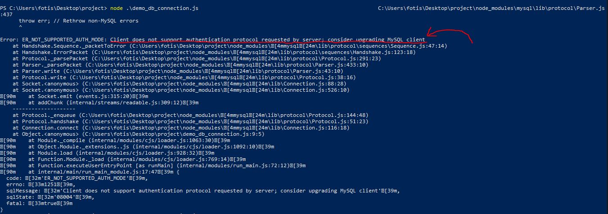

Node.js uses asynchronous programming!
A common task for a web server can be to open a file on the server and return the content to the client. Here is how PHP or ASP handles a file request:
Here is how Node.js handles a file request:
Node.js eliminates the waiting, and simply continues with the next request.
Node.js runs single-threaded, non-blocking, asynchronously programming, which is very memory efficient.
The official Node.js website has installation instructions for Node.js: https://nodejs.org
If you are using Ubuntu there is a chance node may already have been installed with it, I'm not sure since I never checked, try typing node --version in bash to find out. If it is not installed then install it from the link above. While installing it you are given the option to add node to the PATH variable automatically, so when the installation is done you should be able to check your PATH variable and see where node and npm are, so that you can then add the location to the PATH variable of Ubuntu as well so that you can access it in bash. You may also need to add an alias since bash requires you to write the full name of the files, with the extensions, and so writing "node" alone won't work. Lastly, if I remember correctly, npm has a ".cmd" extension, so you won't be able to run it in bash. To run it in bash you need to se this alias first: alias cmd='/mnt/c/Windows/System32/cmd.exe /c' so that you can then set this alias for npm: alias nom='cmd .../npm.cmd'. I have talked more about the path variable and how you can edit it in my python notes, in one of the first sections when I explain how to install it and prepare it.
Once you have downloaded and installed Node.js on your computer, let's try to display "Hello World" in a web browser. Create a Node.js file named "myfirst.js", and add the following code:
The code tells the computer to write "Hello World!" if anyone (e.g. a web browser) tries to access your computer on port 8080. Having a basic understanding of networking could be useful, I have talked about some networking concepts in my computer science notes, and I have explained what ports are. For the moment however you don't have to understand everything about the code above, since this is just an example and we will learn those stuff in more detail another time.
Node.js files must be initiated in the "Command Line Interface" program of your computer. If you are on windows you can use cmd or PowerShell, but you could also download Ubuntu to use bash if you want to, that's what I do.
The file you have just created must be initiated by Node.js before any action can take place. Start your command line interface, write node myfirst.js and hit enter:
Now, your computer works as a server!
If anyone tries to access your computer on port 8080, they will get a "Hello World!" message in return!
To check if it works, open your internet browser, and type in the address "127.0.0.1:8080". The "127.0.0.1" IP address is known as the localhost address, it's an ip address that will always point back to your device, you can also try writing "localhost:8080" and this should also work the same way.
Consider modules to be the same as JavaScript libraries.
A set of functions you want to include in your application.
Node.js has a set of built-in modules which you can use without any further installation.
Look at this Built-in Modules Reference for a complete list of modules.
To include a module, use the require() function with the name of the module:
Now your application has access to the HTTP module, and is able to create a server:
You can create your own modules, and easily include them in your applications.
The following example creates a module that returns a date and time object:
Use the exports keyword to make properties and methods available outside the module file. Save the code above in a file called "myfirstmodule.js"
Now you can include and use the module in any of your Node.js files.
Notice that we use ./ to locate the module, that means that the module is located in the same folder as the Node.js file. Save the code above in a file called "demo_module.js", and initiate the file:
If you have followed the same steps on your computer, you will see the result at this address: http://localhost:8080
Node.js has a built-in module called HTTP, which allows Node.js to transfer data over the Hyper Text Transfer Protocol (HTTP).
To include the HTTP module, use the require() method:
The HTTP module can create an HTTP server that listens to server ports and gives a response back to the client. Use the createServer() method to create an HTTP server:
The function passed into the http.createServer() method, will be executed when someone tries to access the computer on port 8080. Save the code above in a file called "demo_http.js", and initiate the file:
You can then see the results by visiting this address in your internet browser: http://localhost:8080
If the response from the HTTP server is supposed to be displayed as HTML, you should include an HTTP header with the correct content type:
The first argument of the res.writeHead() method is the status code, 200 means that all is OK
The second argument is an object containing the response headers.
You may wonder now, what is an HTTP header? And why do we even need it? I think it's necessary that you have some basic understanding of what HTTP is and how it works before learning NodeJS. Just learning how to do stuff without fully understanding them isn't the right way to learn.
At first you may not see any difference when using the writeHead() method. To see that what you did works, open the dev tools and click "Network", then reload the page so that the HTTP requests made when accessing the page appear. Ignore the favicon.ico request, and click the one with the name "localhost", at the right you should be able to see the Response Headers, that's where the change between the two files should appear.
I have collected here 2 videos that you could watch to better understand HTTP and HTTPS. Firstly, here is a video that simplifies HTTPS so that you can have a clearer picture of what happens in the background:
In the next video I am gonna share with you the guy goes over some HTTP concepts in more detail, so it's a little harder to undertand, it's bigger, but it explains a lot of useful stuff, and he talks about HTTP headers too:
The function passed into the http.createServer() has a
This object has a property called "url" which holds the part of the url that comes after the domain name:
Save the code above in a file called "demo_http_url.js" and initiate the file:
Now, try visiting "localhost:8080/karak10" and "localhost:8080/christina", if everything works correctly, when visiting the first address your page should display "/karak10" while when visiting the second address your page should display "/christina".
There are built-in modules to easily split the query string into readable parts, such as the URL module.
Now if you initiate this file and visit this address "localhost:8080/?year=2017&month=July" then this should appear on your screen: 2017 July
We will talk more about the URL module another time so you don't need to fully understand the code above yet.
The Node.js file system module allows you to work with the file system on your computer.
To include the File System module, use the require() method:
Common use for the File System module:
The fs.readFile() method is used to read files on your computer.
Assume we have the following HTML file (located in the same folder as Node.js):
We can create a Node.js file that reads the HTML file, and return the content:
So, when you visit localhost:8080, the html file you created will now be used.
So, something I want to mention is that we return the res.end() method inside the function we passed in readFile method. Why are we doing that? That's because it takes time for the code inside readFile to run, since it has to retrieve data from anothe file first. We didn't necessarily need to return the res.end() method, we could just call it inside the function and it would still work. What would happen if we wrote the res.end() method outside the function though? The res.end() method would run slightly earlier than the function, and so we would get an error, since we cannot use the res.write() method after he have used the res.end() method. The res.end() method is supposed to end the response and send it to the browser.
In the future we may need to retrieve multiple files and stuff so it may be necessary to use promises instead. Here is an example of how the code would look with a promise:
The URL module splits up a web address into readable parts.
To include the URL module, use the require() method:
Parse an address with the url.parse() method, and it will return a URL object with each part of the address as properties:
This method accepts three parameters as described below:
Now we know how to parse the query string, and in the previous chapter we learned how to make Node.js behave as a file server. Let us combine the two, and serve the file requested by the client.
Create two html files and save them in the same folder as your node.js files.
Create a Node.js file that opens the requested file and returns the content to the client. If anything goes wrong, throw a 404 error:
Remember to initiate the file:
If you have followed the same steps on your computer, you should see two different results when opening these two addresses:
Node.js is perfect for event-driven applications.
Every action on a computer is an event. Like when a connection is made or a file is opened.
Objects in Node.js can fire events, like the readStream object fires events when opening and closing a file:
Let's go step by step so we can understand what's going on with the code and how Node.js works.
First we import the filesystem module into our code.
Then we are using the createReadStream method from fs to create a readable stream object. You can
learn more about what a stream is in the video bellow:
Anyway, Node.js is event-driven. It means that you can know when something is done. In our case, we are listening to the event 'open' so whenever ReadStream opens the file it will let us know. The 'open' event doesn't mean that you need to open the file manually.
I may talk more about the createReadStream method in the future, this section is about events, and createReadStream is just an example I used, don't let it confuse you. Just like how images, audio and document elements have events a read stream object can as well have events, this is nothing new actually if you know JavaScript you should already be familiar with events. Only new thing we learn here is the createReadStream method, which creates a ReadStream object, but it's not necessary to fully understand it yet, for now here is a video that explains the method a little better:
You can assign event handlers to your own events with the EventEmitter object.
In the example below we have created a function that will be executed when a "scream" event is fired.
To fire an event, use the emit() method.
So, EventEmitter is a class inside the events object, which you use to create a new object from that class. You can then use the object to set and emit events.
Let's try making this more interesting by using it together with a module called util, which has a method that allows a constructor to inherit methods from another class or function.
Here is a video that talks about events:
There is a very good module for working with file uploads, called "Formidable".
The Formidable module can be downloaded and installed using NPM:
After you have downloaded the Formidable module, you can include the module in any application:
Now you are ready to make a web page in Node.js that lets the user upload files to your computer:
Create a Node.js file that writes an HTML form, with an upload field:
The method attribute specifies how to send form-data. The form-data is sent to the page specified in the action attribute.
The enctype attribute specifies how the form-data should be encoded when submitting it to the server.
| Value | Description |
|---|---|
| application/x-www-form-urlencoded | Default. All characters are encoded before sent (spaces are converted to "+" symbols, and special characters are converted to ASCII HEX values) |
| multipart/form-data | This value is necessary if the user will upload a file through the form |
| text/plain | Sends data without any encoding at all. Not recommended |
The enctype attribute can be used only if method="post" is used.
The name attribute is used to reference elements in JavaScript, or to reference form data after a form is submitted. Only form elements with a name attribute will have their values passed when submitting a form.
Include the Formidable module to be able to parse the uploaded file once it reaches the server.
When the file is uploaded and parsed, it gets placed on a temporary folder on your computer.
So, I am pretty sure I mentioned perviously at some point that req.url holds the part of the url that comes after the domain name. When we sumbit the form, an HTTP request will be sent to the server with localhost:8080/fileupload being it's destination. Like we have done in previous examples we are using node to respond to that request. In fact, we are using the formidable module to parse the data sent with the http request and write a respond to be displayed on the page.
When a file is successfully uploaded to the server, it is placed on a temporary folder.
The path to this directory can be found in the "files" object, passed as the third argument in the parse() method's callback function.
To move the file to the folder of your choice, use the File System module, and rename the file:
Don't let the code above confuse you. The fs.rename() method is used to asynchronously rename a file at the given old path to a given new path. It will overwrite the destination file if it already exists. So that's all the code really does, it takes the path of where the file has been saved, and it changes that file's path to a new path that can be anywhere you like, I recommend a folder perhaps inside your project or something.
About the files and fields property, they can be used to access files or fields inputs. As you can see in the example I am accessing the file input with the name "filetoupload", which name I had given the input inside the html. Similarly we can access fields like the example bellow:
In the example above I have made it so you can type a name for the file, and to automatically add the extension of the image next to the name I used regular expressions so that I can take the extension from the original file's name.
The Nodemailer module makes it easy to send emails from your computer.
The Nodemailer module can be downloaded and installed using npm:
After you have downloaded the Nodemailer module, you can include the module in any application:
Now you are ready to send emails from your server.
Use the username and password from your selected email provider to send an email. This example will show you how to use your Gmail account to send an email:
And that's it! Now your server is able to send emails. Of course this module can be used while responding to HTTP requests too. Which means, if you use the formidable module as well you can do pretty cool things with this.
To send an email to more than one receiver, add them to the "to" property of the mailOptions object, separated by commas:
To send HTML formatted text in your email, use the "html" property instead of the "text" property:
Node.js can be used in database applications.
One of the most popular databases is MySQL.
To be able to experiment with the code examples, you should have MySQL installed on your computer.
I have written about MySQL a lot more in previous notes I have kept, so you can find more about
how to install it and use it here: backend1.html.
Once you have MySQL up and running on your computer, you can access it by using Node.js.
To access a MySQL database with Node.js, you need a MySQL driver. This tutorial will use the "mysql" module, downloaded from NPM.
To download and install the "mysql" module, open the Command Terminal and execute the following:
Now you have downloaded and installed a mysql database driver.
Node.js can use this module to manipulate the MySQL database:
Start by creating a connection to the database.
Use the username and password from your MySQL database.
You set the host, user and password of your connection when creating it in MySQL Workbench:
Save the code above in a file called "demo_db_connection.js" and run the file:
When doing that you may get an error, like I did:
Error: ER_NOT_SUPPORTED_AUTH_MODE: Client does not support authentication protocol requested by server; consider upgrading MySQL client
So, as you can see the authentication protocol is not supported. Let's try to understand why this happens and learn how to fix this.
Let's first make it clear what's going on.
MySQL 8 supports pluggable authentication methods. By default, one of them named caching_sha2_password is used rather than our good old mysql_native_password (source). It should be obvious that using a crypto algorithm with several handshakes is more secure than plain password passing that has been there for 24 years.
Now, the problem is mysqljs in Node (the package you install with npm install mysql and use it in your Node code) doesn't support this new default authentication method of MySQL 8, yet. The issue is in here: https://github.com/mysqljs/mysql/issues/1507 and is still open, after 3 years, as of July 2019.
Execute the following query in MySQL Workbench
ALTER USER 'root'@'localhost' IDENTIFIED WITH mysql_native_password BY 'password';
Where root is your user, localhost is your URL and password is your password
Then run this query to refresh privileges:
flush privileges;
Try connecting using node after you do so.
If that doesn't work, try it without @'localhost' part.
Just install and use mysql2 (instead of mysql) and use it -- npm install mysql2, and mysql = require('mysql2')
Now you can start querying the database using SQL statements.
Use SQL statements to read from (or write to) a MySQL database. This is also called "to query" the database.
The connection object created in the example before, has a method for querying the database:
I have already made a simple Database named school, with a table named students, to which I have added 2 rows, we are using the JSON.stringify method so that the whole object tree is displayed in the terminal and not just the name of the object.
The JSON.stringify object takes 3 properties:
Let's try out our code now and see how the object that is returned looks like:
So we got an array of all the rows that were selected, each item of the array is an object that contains the columns of the row. Here is what the table looks like if seen inside the MySQL Workbench:
| student_id | first_name | last_name | age |
| 1 | Jane | Doe | 17 |
| 2 | John | Doe | 32 |
We are going to learn more about how to read, write, delete, and update databases in the next chapters.